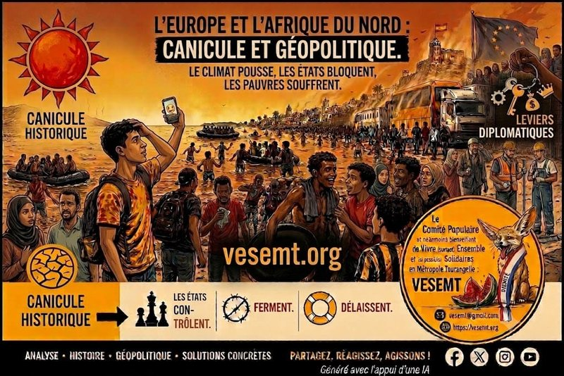

« Les migrations ne commencent jamais à une frontière. Elles commencent toujours bien avant. »
Dans notre premier billet, « Le réchauffement climatique est devenu un problème… depuis qu’il touche les Blancs ? », nous montrions que les migrations contemporaines ne tombent pas du ciel.
- Elles prennent naissance dans les sécheresses qui détruisent les récoltes.
- Dans les inondations qui engloutissent des villages.
- Dans les terres rendues stériles.
- Dans les accords commerciaux qui ruinent les agricultures locales.
- Dans les ressources pillées.
- Dans les guerres alimentées par les intérêts économiques.
Autrement dit, les migrations sont souvent le service après-vente de notre modèle de développement.
Nous rappelions alors que l’Europe, responsable d’une part considérable des émissions historiques de gaz à effet de serre et grande bénéficiaire de siècles d’exploitation coloniale, semble découvrir l’urgence climatique uniquement lorsque celle-ci menace son propre confort.
Le climat n’est donc pas un sujet séparé des migrations.
Il en est désormais l’une des causes majeures.
Dans notre deuxième billet, « Ceuta : L’Europe panique, sa géographie coloniale prend l’eau. », nous déplacions le regard.
Nous rappelions que Ceuta n’est pas une simple frontière.
C’est une frontière coloniale.
Une enclave européenne sur le continent africain.
Le symbole vivant d’une histoire que beaucoup voudraient oublier.
Nous montrions également que l’Europe externalise depuis des années sa politique migratoire en finançant d’autres États afin qu’ils retiennent, à sa place, celles et ceux qui fuient les conséquences d’un ordre mondial profondément inégal.
Aujourd’hui, un troisième constat s’impose.
Les migrations ne sont plus seulement la conséquence des désordres du monde. Elles deviennent aussi un instrument de rapports de force entre États.
Mais reconnaître cette réalité ne doit jamais conduire à oublier celles et ceux qui en sont les premières victimes.
« Les migrants ne sont pas l’arme. Ils sont les munitions des États. »
Depuis plusieurs jours, de nombreuses vidéos montrent des autocars et des camions déposant simultanément de nombreux jeunes à proximité de Ceuta.
Ces images, relayées notamment par Mr. Mondialisation et Afrique.com et commentées par de nombreux observateurs, interrogent.
Si elles traduisent effectivement une organisation facilitée ou tolérée par les autorités marocaines, nous ne sommes plus uniquement devant un phénomène migratoire spontané.
Nous sommes peut-être face à une instrumentalisation géopolitique de populations humaines.
Cette hypothèse mérite d’être examinée.
- Elle mérite des enquêtes.
- Elle mérite des preuves.
- Elle mérite un débat.
Mais elle ne mérite ni récupération politique, ni emballement médiatique.
Car les premiers responsables ne sont jamais ceux qui prennent la mer.
« Quand Rabat ouvre la porte, Bruxelles découvre soudain qu’elle existe. »
Depuis des années, l’Union européenne
- finance ;
- sous-traite ;
- externalise ;
- délègue
le contrôle de ses frontières.
Elle rémunère des États voisins pour retenir des populations qu’elle refuse d’accueillir.
Lorsque ce système fonctionne, Bruxelles s’en félicite.
Lorsqu’il vacille, les mêmes responsables parlent d’« invasion ».
Pourtant, le rapport de force est limpide.
Celui qui contrôle les frontières contrôle aussi une partie de la politique européenne. Et cette crise ne surgit pas dans un vide diplomatique.
« Ceuta : une frontière… mais surtout un levier diplomatique. »
Ce ne serait d’ailleurs pas la première fois que le Maroc utiliserait la question migratoire comme moyen de pression sur l’Espagne. En mai 2021, après l’accueil à Logroño de Brahim Ghali, dirigeant du Front Polisario, pour y être soigné de la Covid-19, Rabat avait fortement relâché les contrôles à la frontière de Ceuta. En moins de quarante-huit heures, près de 10 000 personnes avaient pénétré dans l’enclave espagnole. Cette crise avait été largement interprétée comme un avertissement adressé à Madrid dans le contexte du conflit du Sahara occidental.
Depuis lors, les équilibres régionaux ont évolué. Le Maroc a consolidé son rapprochement avec Israël dans le cadre des Accords d’Abraham, tandis que l’Espagne cherche à préserver ses relations avec Rabat sans rompre avec l’Algérie, partenaire énergétique majeur et soutien historique du Front Polisario. La question du Sahara occidental demeure au cœur de ces tensions diplomatiques et chaque évolution est scrutée avec la plus grande attention.
Dans ce contexte, Ceuta n’est plus seulement une frontière : elle devient un levier diplomatique. Chaque crise migratoire envoie un message à Madrid, mais aussi à Bruxelles, en rappelant que la protection des frontières extérieures de l’Union européenne dépend largement de la coopération, ou de la bonne volonté, des pays riverains.
Cela ne signifie pas que toutes les personnes migrantes soient manipulées ou conscientes des enjeux diplomatiques. Mais cela rappelle une réalité essentielle : lorsque les États s’affrontent, ce sont souvent les plus précaires qui servent de variables d’ajustement.
« Une guerre hybride où les corps remplacent les chars. »
Les conflits contemporains ne ressemblent plus à ceux des livres d’histoire.
Aujourd’hui, on exerce des pressions diplomatiques avec :
- l’énergie ;
- les céréales ;
- les métaux rares ;
- les données numériques ;
- les cyberattaques ;
- … et parfois avec des êtres humains.
Les images remplacent les missiles.
Les réseaux sociaux deviennent des champs de bataille.
Mais une chose ne change jamais.
Les puissants déplacent les pièces. Les pauvres paient toujours la partie.
« La vraie frontière traverse désormais les plateaux télé. »
Pendant que certains médias ne montrent que les foules… D’autres ne montrent que les noyés.
Les premiers fabriquent la peur. Les seconds simplifient parfois l’analyse.
Notre responsabilité est de tenir ensemble plusieurs vérités.
- Oui, certains États peuvent instrumentaliser des mouvements migratoires.
- Oui, l’Union européenne externalise depuis longtemps sa politique frontalière.
- Oui, les migrations trouvent leurs racines dans le dérèglement climatique, les guerres, les inégalités économiques et l’héritage colonial.
- Oui, les trois réalités peuvent coexister.
Ce n’est pas contradictoire.
C’est précisément ce qui rend la situation si complexe.
« Le silence est aussi une politique. »
L’extrême droite transforme chaque embarcation en argument électoral.
Une partie de la droite répond par davantage de murs.
Mais où sont les autres ? Par exemple
- Que disent les responsables politiques de notre métropole ?
- Que disent les parlementaires d’Indre-et-Loire ?
- Que disent les exécutifs locaux ?
- Que disent les forces de gauche qui, à juste titre, dénoncent les inégalités sociales mais restent bien discrètes sur les causes structurelles des migrations ?
Le silence.
Certes, La trêve estivale est confortable.
- Mais les canicules ne prennent pas de vacances.
- Les noyades non plus.
- Les centres de rétention pas plus.
- Les travailleurs sans papiers continuent, eux, de faire fonctionner des secteurs entiers de notre économie.
- Le climat, les migrations et les injustices sociales n’attendent jamais la rentrée politique.
« Une politique digne ne commence jamais par un barbelé. »
Nous refusons les discours de haine.
Nous refusons les simplifications.
Nous refusons que des êtres humains deviennent des outils diplomatiques.
Nous refusons également que le dérèglement climatique continue d’être traité comme un sujet distinct des migrations.
Parce que les deux sont désormais indissociables.
Nous proposons avec de nombreux autres collectifs : :
- des voies légales et sécurisées de migration ;
- la fermeture des centres de rétention administrative ;
- la régularisation des travailleuses et travailleurs sans papiers ;
- une véritable justice climatique internationale ;
- une remise à plat des accords économiques déséquilibrés entre le Nord et le Sud ;
- la fin de l’externalisation des frontières européennes ;
- un débat public honnête, fondé sur les faits plutôt que sur les peurs.
« On ne construit jamais la paix avec des murs. On construit seulement des cimetières plus grands. »
L’Histoire ne nous demande pas de choisir entre la lucidité et l’humanité.
Elle nous demande de conserver les deux.
Parce que l’on peut dénoncer les manipulations des États sans renoncer à défendre les droits fondamentaux des personnes.
Parce que l’on peut analyser les rapports de force géopolitiques sans oublier que, derrière chaque statistique, il y a un visage.
Parce que les migrations ne sont pas une parenthèse de notre époque. Elles sont le miroir de notre modèle économique, de notre histoire coloniale, de notre responsabilité climatique… et de nos rivalités géopolitiques. Les comprendre exige donc de regarder l’ensemble du tableau. Pas seulement la frontière.
Abd-El-Kader AIT-MOHAMED
• Locataire HLM de la Tour de la Galboisière et « Fier de l’être ».
• Membre du Comité populaire et néanmoins bienveillant de Vivre (surtout) Ensemble et (si possible) Solidaires en Métropole Tourangelle (VESEMT).
• Président de l’Association VESEMT.
Sources de réflexion
• VESEMT – Le réchauffement climatique est devenu un problème… depuis qu’il touche les Blancs ? https://vesemt.org/?p=839
• VESEMT – Ceuta : L’Europe panique, sa géographie coloniale prend l’eau. https://vesemt.org/?p=853
• Publications Fb de M. Mondialisation et de Afique.com consacrée aux événements de Ceuta (août 2026), utilisée comme élément de réflexion sur l’hypothèse d’une instrumentalisation géopolitique des flux migratoires. Les éléments avancés appellent, pour certains, des vérifications indépendantes.
• Analyses et reportages de plusieurs médias français, espagnols et internationaux.
• Organisation internationale pour les migrations (OIM).
• Front de l’Immigration et des Quartiers Populaires (FUIQP).
• Marche des Solidarités.
• Campagne #RegularizacionYa.
• Frantz Fanon – Les Damnés de la Terre.
• Achille Mbembe – Politiques de l’inimitié.
Commentaires